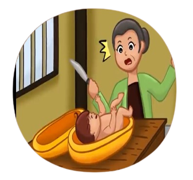

Cerita Rakyat Indonesia
Timun Mas
Timun Mas mengisahkan seorang perempuan bernama Mbok Srini yang ingin memiliki anak, karena dirinya merasa kesepian tinggal sendirian setelah suaminya meninggal. Suatu hari, dirinya didatangi seorang raksasa yang memberinya biji ketimun.
